Te aviso antes de que me escribas.
No trabajes conmigo si no quieres que te pase esto.
WIN 01
Que tu jefe te delegue sus reuniones. Y te mande a Alemania.
Sol, gerente de logística, nos escribió desde allá:
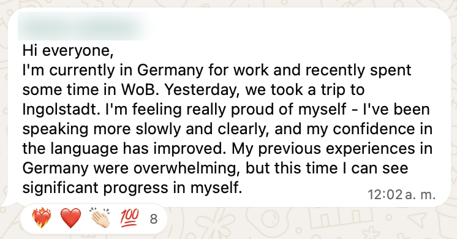
WIN 02
Dejar de hablar rápido solo para que termine pronto.
Y lo que cambió por dentro, en palabras de Sol:
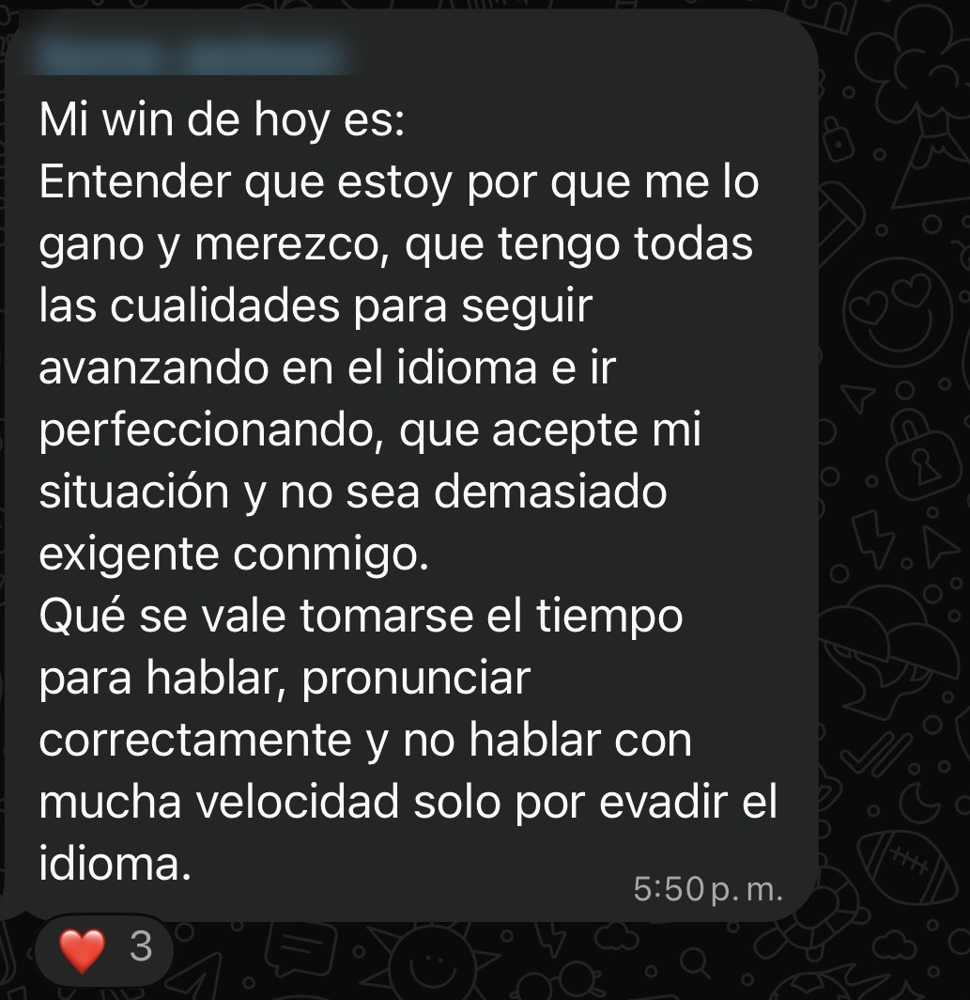
WIN 03
Entender TODO en una reunión 100% en inglés.
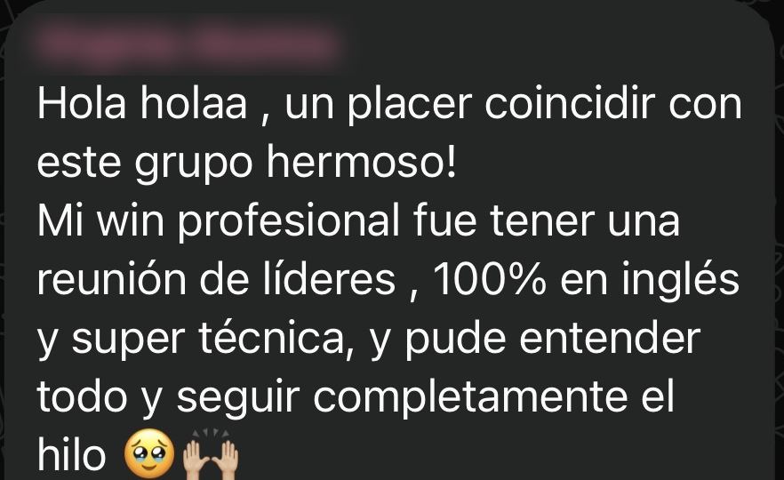
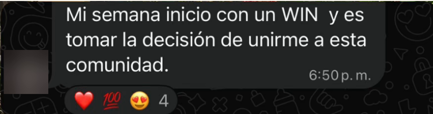
WIN 04
Dar tu punto de vista en la reunión. Aunque falle internet.
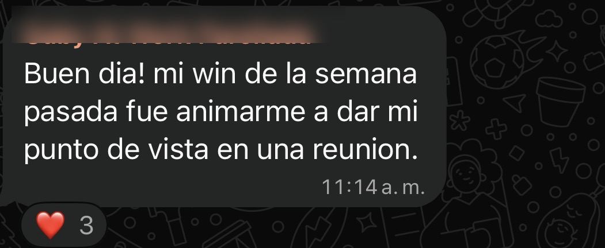
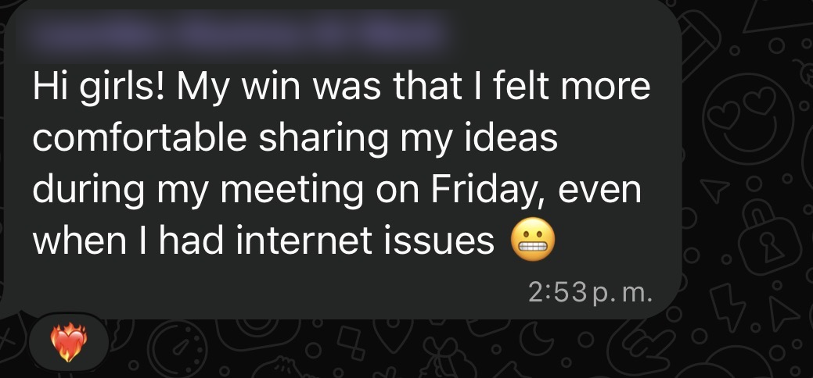
WIN 05
Explicarle tu proyecto a un equipo técnico. Y que tu jefa te felicite.
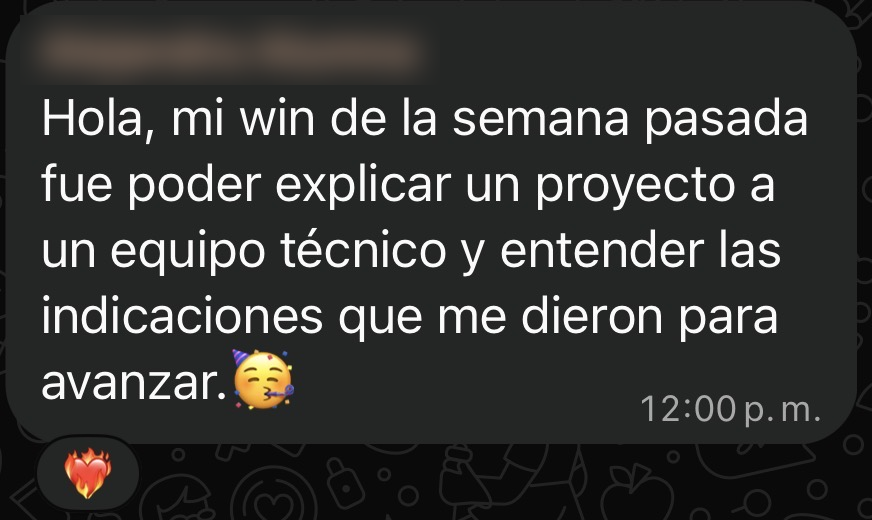
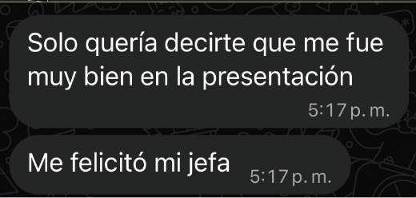
WIN 06
Leer con seguridad lo que antes traducías.
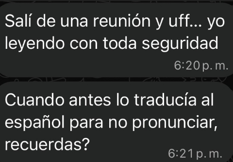
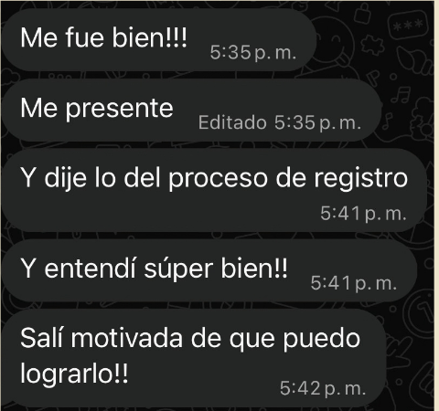
WIN 07
Animarte a preguntar delante de todos.
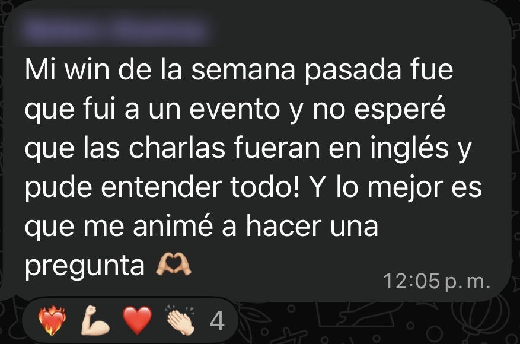
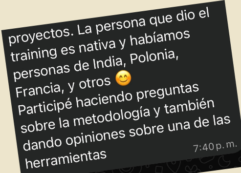
WIN 08
Descubrir qué te frenaba. Y saber exactamente qué entrenar.
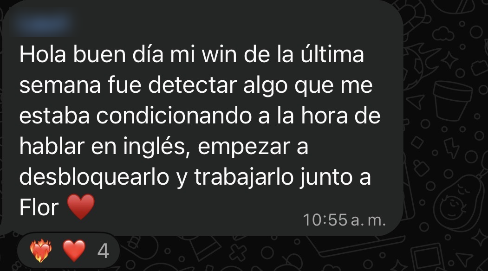
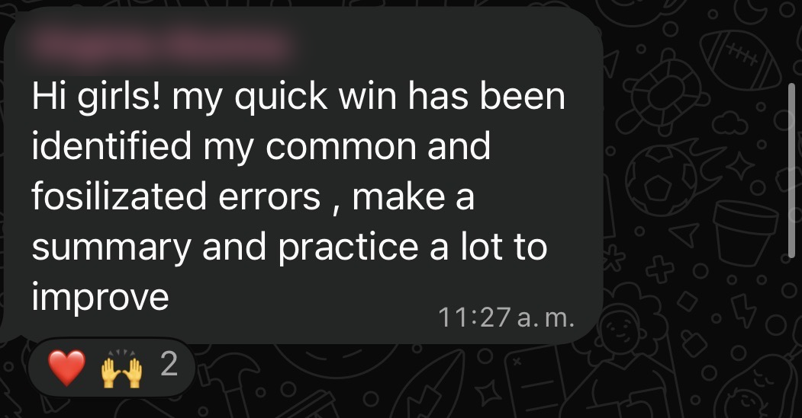
WIN 09
Volver a empezar. Y volver a participar.
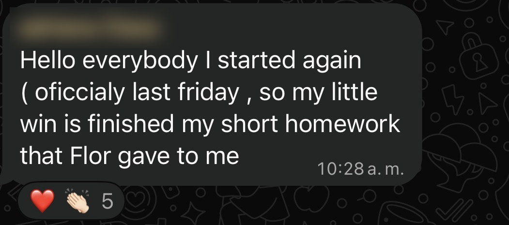
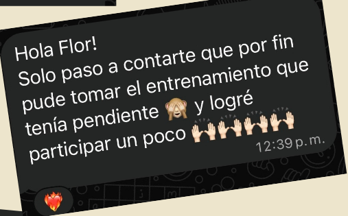
WIN 10
Y que tus amigas te pidan mi contacto.
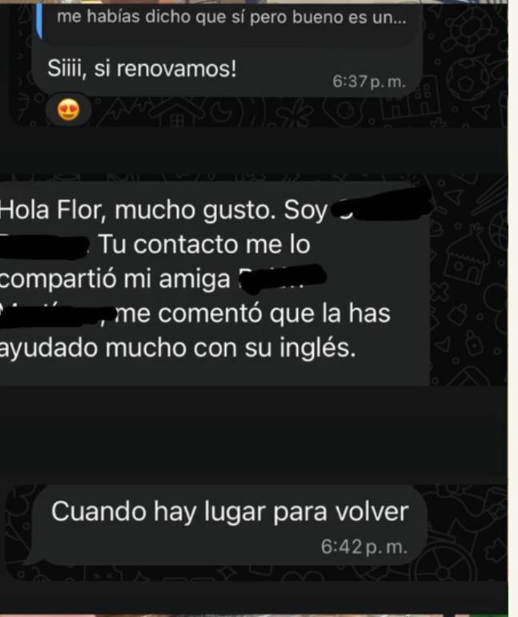
Todas empezaron como tú:
entendiendo casi todo y sin animarse a hablar.
Si igual quieres que te pase,
comenta WIN y hablamos.
Clear, not native.